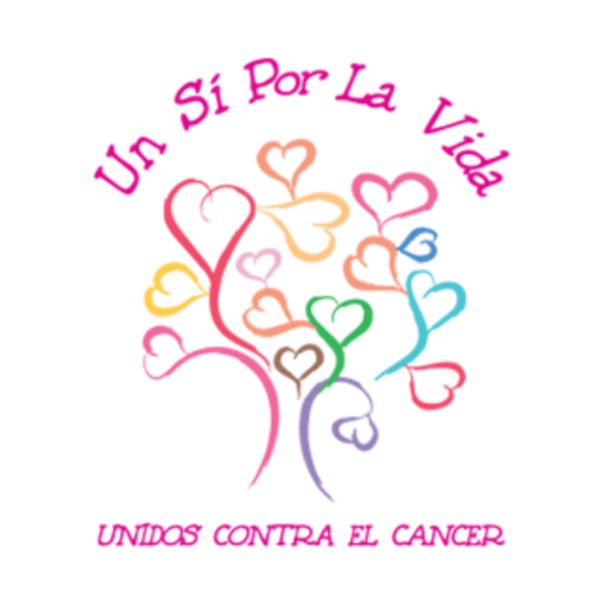

La asociación Un Sí por la Vida impulsa una cadena humana en Alhaurín el Grande para fomentar hábitos saludables y la prevención del cáncer.
Cadena Humana “Por 12 Millones de Pasos”: caminar juntos por la prevención del cáncer El próximo viernes 13 de febrero, la localidad de Alhaurín el Grande se volverá a unir en una acción solidaria y de concienciación impulsada por la asociación Un Sí por la Vida – Unidos Contra el Cáncer. Bajo el lema “Por 12 millones de pasos”, la iniciativa gratuita invita a toda la comunidad a participar en una cadena humana y caminata saludable que comenzará a las 10:00 de la mañana desde el Centro de Salud Francisco Burgos. Esta actividad se organiza con motivo del Día Mundial contra el Cáncer y el Cáncer Infantil como una forma de sensibilizar sobre la importancia de los hábitos de vida saludables y la prevención de enfermedades oncológicas. Un Sí por la Vida: quiénes son y qué hacen Entre los servicios que ofrece la asociación se encuentran: • Atención psicológica especializada • Fisioterapia oncológica y tratamiento de linfedema • Entrenamientos terapéuticos • Educación nutricional • Actividades de relajación y bienestar • Asesoramiento en documentación y prestaciones • Servicios de transporte para pacientes Todo ello con el objetivo de mejorar la calidad de vida de quienes están afrontando la enfermedad.
La Cadena Humana: tradición y objetivos La caminata “Por 12 millones de pasos” es una evolución de una acción que la asociación viene realizando en años anteriores para conmemorar el Día Mundial contra el Cáncer. En 2025, la cadena alcanzó su undécima edición, reuniendo a participantes de todos los sectores de la localidad, especialmente centros escolares y colectivos juveniles, con el fin de inculcar la importancia del ejercicio físico y de los hábitos saludables desde edades tempranas. Este tipo de eventos no solo tiene un valor simbólico —representado por el objetivo metafórico de alcanzar “millones de pasos”— sino también comunitario, ya que reúne a familias, escolares y vecinos en un mismo gesto de solidaridad, apoyo y vida saludable. Detalles del evento • Fecha: Viernes 13 de febrero • Hora: 09:30 h (convocatoria) – 10:00 h (inicio) • Lugar: Centro de Salud Francisco Burgos, Alhaurín el Grande • Precio: Actividad gratuita • Participación: abierta a toda la ciudadanía, con especial implicación de centros escolares La caminata busca fomentar no solo la práctica de ejercicio, sino también la concienciación activa sobre cómo los hábitos diarios —como la alimentación equilibrada, la actividad física y la detección temprana— pueden jugar un papel importante en la prevención del cáncer. Un llamado a toda la comunidad
Contenido elaborado por GEPAC · Serie GEPAC · Prevención y concienciación en cáncer https://www.gepac.es/